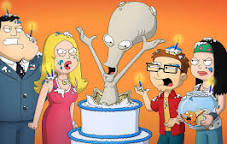
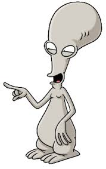

 
In American Dad the most important and funny characters are Roger, Steve and Stan.
Roger
is just super funny and adds alot of humor the show. Steve is funny in a feel bad for him type of way
because nothing goes his way. And Stan is just so crazy and sporadic which really adds alot to the show.